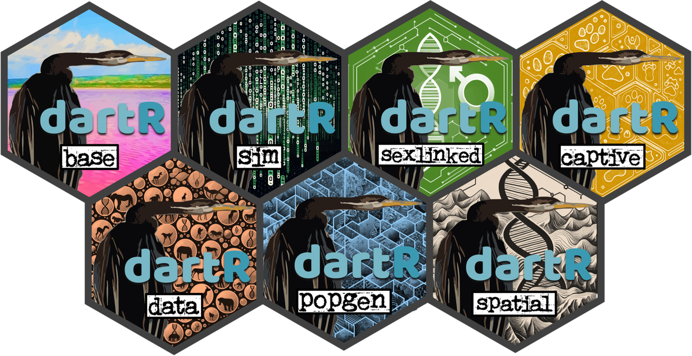

library(dartR.base)
library(dartR.data)1 Intro to dartR
Session Presenters

Required packages
make sure you have the packages installed, see Install dartRverse
The dartRverse
From 1 package to 7
 See the section Install dartRverse to learn about the reasoning behind how the dartRverse came to be…
The magical world of RStudio Cloud
Step 1: Summoning the RStudio Cloud Portal
Embark on the Journey: Open your trusty steed (a.k.a. your web browser) and gallop over to Rstudio Cloud.
Forge Your Credentials: Spot the “Sign Up” beacon in the realm’s upper right corner and click it with courage. Click on the “Learn more” below the “Cloud Free” plan and then in the “Sign Up” button. A scroll will appear, asking for your name, your secret code (password), and your e-mail. Please use the same e-mail you provided when you registered to the workshop.
- Prove Your Worth: After submitting your details, a pigeon (or was it an email?) will fly into your inbox carrying a secret message. Click the link within to prove you’re not a goblin in disguise.
Step 2: Entering the Secret Workshop Chamber
Return to the Portal: With your email now verified, make your way back to the RStudio Cloud realm and use your newly forged credentials to enter.
Finding the Secret Door: One day before the workshop, a link leading to the workshop’s chamber will be sent to your e-mail.
Step 3: Joining the Fellowship of the Project
- Locate the Treasure Chest: Within the grand chamber (workshop space), seek the project “PopGenR” and click on it to reveal its secrets. As you open it for the first time, ancient RStudio Cloud spirits will work their magic to prepare your environment.

dartR fundamentals
The structure of a genlight object
 For a detailed rundown of the genetic data check out the tuturial on Data Structure and Input found in the dartR Tutorials section.
For a detailed rundown of the genetic data check out the tuturial on Data Structure and Input found in the dartR Tutorials section.
the Basics
Here is a glimpse at the functions we will be using. Please follow along, or try running the code on your own.
testset.gl
gl <- testset.gl
nInd(gl)
nLoc(gl)
nPop(gl)
popNames(gl)
indNames(gl)
locNames(gl)
table(pop(gl))
as.matrix(gl)[1:7,1:5]
gl.set.verbosity(3)gl.report.callrate(gl) # loci callrate
gl.report.callrate(gl,method="ind") # ind callrate
gl.report.reproducibility(gl) # reproducibility
# filter
gl.filter.callrate(gl,method ="ind", threshold=0.8)gl.report.callrate(gl)Starting gl.report.callrate
Processing genlight object with SNP data
Reporting Call Rate by Locus
No. of loci = 255
No. of individuals = 250
Minimum : 0.056
1st quartile : 0.912
Median : 0.984
Mean : 0.8765804
3r quartile : 1
Maximum : 1
Missing Rate Overall: 0.1234 
Completed: gl.report.callrate gl.report.callrate(gl,method="ind")Starting gl.report.callrate
Processing genlight object with SNP data
Reporting Call Rate by Individual
No. of loci = 255
No. of individuals = 250
Minimum : 0.7490196
1st quartile : 0.8666667
Median : 0.8823529
Mean : 0.8765804
3r quartile : 0.8941176
Maximum : 0.9333333
Missing Rate Overall: 0.1234
Listing 30 populations and their average CallRates
Monitor again after filtering
Population CallRate N
1 EmmacBrisWive 0.8839 10
2 EmmacBurdMist 0.8808 10
3 EmmacBurnBara 0.8859 11
4 EmmacClarJack 0.8596 5
5 EmmacClarYate 0.8769 5
6 EmmacCoopAvin 0.7682 10
7 EmmacCoopCully 0.9122 10
8 EmmacCoopEulb 0.8702 10
9 EmmacFitzAllig 0.8973 10
10 EmmacJohnWari 0.8929 10
11 EmmacMaclGeor 0.8806 11
12 EmmacMaryBoru 0.8843 6
13 EmmacMaryPetr 0.8892 4
14 EmmacMDBBowm 0.8824 10
15 EmmacMDBCond 0.8855 10
16 EmmacMDBCudg 0.8878 10
17 EmmacMDBForb 0.8766 11
18 EmmacMDBGwyd 0.9050 9
19 EmmacMDBMaci 0.8773 10
20 EmmacMDBMurrMung 0.8890 10
21 EmmacMDBSanf 0.8914 10
22 EmmacNormJack 0.8725 6
23 EmmacNormLeic 0.8863 1
24 EmmacNormSalt 0.8706 1
25 EmmacRichCasi 0.8757 10
26 EmmacRoss 0.8706 10
27 EmmacRussEube 0.8612 10
28 EmmacTweeUki 0.8773 10
29 EmsubRopeMata 0.8345 5
30 EmvicVictJasp 0.8361 5
Listing 20 individuals with the lowest CallRates
Use this list to see which individuals will be lost on filtering by individual
Set ind.to.list parameter to see more individuals
Individual CallRate
1 AA063722 0.7490196
2 AA063726 0.7490196
3 AA063732 0.7647059
4 AA063720 0.7686275
5 AA063712 0.7686275
6 AA063708 0.7725490
7 AA063718 0.7764706
8 AA063710 0.7764706
9 AA063714 0.7764706
10 AA063716 0.7803922
11 AA032760 0.7960784
12 UC_00210 0.8196078
13 UC_00259 0.8196078
14 AA018494 0.8235294
15 UC_00206 0.8235294
16 AA019164 0.8274510
17 UC_00209 0.8313725
18 UC_00254 0.8313725
19 AA019159 0.8352941
20 UC_00126c 0.8352941
)
Completed: gl.report.callrate gl.report.reproducibility(gl)Starting gl.report.reproducibility
Processing genlight object with SNP data
Reporting Repeatability by Locus
No. of loci = 255
No. of individuals = 250
Minimum : 0.959459
1st quartile : 1
Median : 1
Mean : 0.9981525
3r quartile : 1
Maximum : 1
Missing Rate Overall: 0.12 
Quantile Threshold Retained Percent Filtered Percent
1 100% 1.000000 214 83.9 41 16.1
2 95% 1.000000 214 83.9 41 16.1
3 90% 1.000000 214 83.9 41 16.1
4 85% 1.000000 214 83.9 41 16.1
5 80% 1.000000 214 83.9 41 16.1
6 75% 1.000000 214 83.9 41 16.1
7 70% 1.000000 214 83.9 41 16.1
8 65% 1.000000 214 83.9 41 16.1
9 60% 1.000000 214 83.9 41 16.1
10 55% 1.000000 214 83.9 41 16.1
11 50% 1.000000 214 83.9 41 16.1
12 45% 1.000000 214 83.9 41 16.1
13 40% 1.000000 214 83.9 41 16.1
14 35% 1.000000 214 83.9 41 16.1
15 30% 1.000000 214 83.9 41 16.1
16 25% 1.000000 214 83.9 41 16.1
17 20% 1.000000 214 83.9 41 16.1
18 15% 0.997674 217 85.1 38 14.9
19 10% 0.994536 230 90.2 25 9.8
20 5% 0.984694 243 95.3 12 4.7
21 0% 0.959459 255 100.0 0 0.0
Completed: gl.report.reproducibility gl.filter.callrate(gl,method ="ind", threshold=0.8)Starting gl.filter.callrate
Processing genlight object with SNP data
Warning: Data may include monomorphic loci in call rate
calculations for filtering
Recalculating Call Rate
Removing individuals based on Call Rate, threshold = 0.8
Individuals deleted (CallRate <= 0.8 ):
AA032760[EmmacMDBMaci], AA063718[EmmacCoopAvin], AA063720[EmmacCoopAvin], AA063722[EmmacCoopAvin], AA063726[EmmacCoopAvin], AA063732[EmmacCoopAvin], AA063708[EmmacCoopAvin], AA063710[EmmacCoopAvin], AA063712[EmmacCoopAvin], AA063714[EmmacCoopAvin], AA063716[EmmacCoopAvin],
Summary of filtered dataset
Call Rate for individuals > 0.8
Original No. of loci : 255
Original No. of individuals: 250
No. of loci retained: 255
No. of individuals retained: 239
No. of populations: 29 
Note: Locus metrics not recalculated
Note: Resultant monomorphic loci not deleted
Completed: gl.filter.callrate
Tip
Remember, you can always look up the help file for dartRverse functions by putting a question mark (?) before a function.
For example:
?gl.filter.callrateMake sure you have the associated library loaded (eg. libary(dartR.base))
Exploring functions
Exercise
 Try some of these report, subset, and filtering functions on your own.
Try some of these report, subset, and filtering functions on your own.
Reporting
gl.report.callrate()
gl.report.reproducibility()
gl.report.secondaries()
gl.report.rdepth()
gl.report.monomorphs()
gl.report.overhang()
gl.report.hamming()
gl.report.overshoot()Subsetting
gl.keep.ind()
gl.drop.ind()
gl.keep.loc()
gl.drop.loc()
gl.keep.pop()
gl.drop.pop()
gl.merge.pop()
gl.subsample.ind()
gl.subsample.loc()for a more in depth walk through see the dartR Tutorials section.
filtering
gl.filter.callrate()
gl.filter.reproducibility()
gl.filter.secondaries()
gl.filter.rdepth()
gl.filter.monomorphs()
gl.filter.overhang()
gl.filter.hamming()
gl.filter.overshoot()Further Study
For more tuturials see the dartR Tutorials section